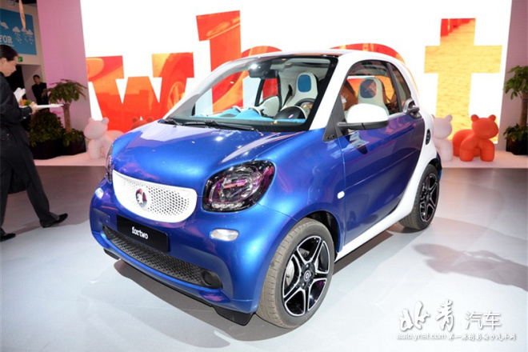
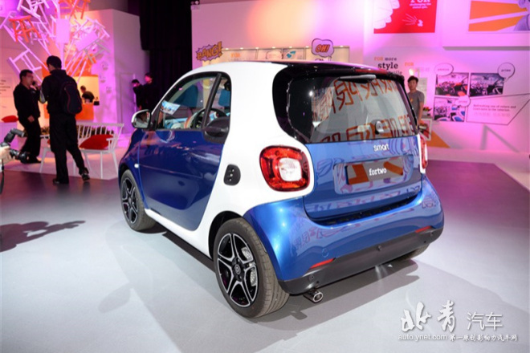

2015-06-12 09:00:28
日前，我们从相关渠道获悉，全新smart fortwo车型将于7月底正式上市，新车将于7月起正式开始接受预定。
全新smart fortwo造型依旧小巧，新车前脸造型更加饱满圆润，前进气格栅则采用网状格栅设计，中央镶嵌有“smart”品牌标识。另外，新车类似叶片造型的前大灯内部还带有LED日间行车灯，前保险杠底部还装配了现款车型没有配备的雾灯。
动力系统方面，全新smart fortwo将提供1.0L三缸或0.9T三缸发动机供消费者可选，其最大输出功率分别为70马力和90马力。传动系统，与发动机匹配的是5速手动或6速双离合变速箱。
(北青编辑：霍佳鑫）